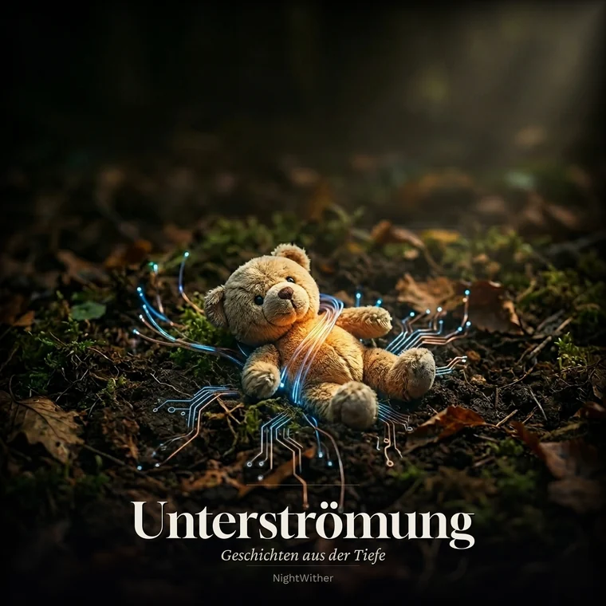

MrNightwither
Podcast-Universum mit atemberaubenden Geschichten, ehrlichen Gedanken und atmosphärischen Welten. Willkommen in der Nacht.
Profil auf SpotifyMeine Podcasts
Community • Gaming
NightWither – Ungefiltert
Community-Geschichten, Gaming-Gedanken und persönliche Reflexionen über das, warum ich tue, was ich tue.
Anhören →
Fiktion • Literatur
Unterströmung
Atmosphärische Geschichten, die in deinen Erinnerungen widerhallen. 10 Episoden á ~5 Minuten.
Anhören →Gesellschaft • Journalling
Was ich begraben habe
Autobiographisch, ehrlich, ungefiltert. Für alle, die wissen, wie es sich anfühlt, Teile von sich zu verstecken.
Kommt bald